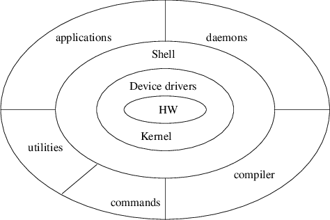
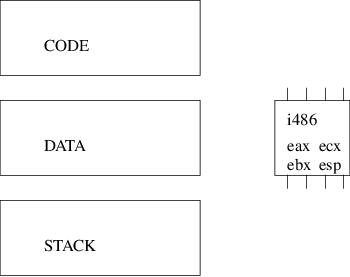
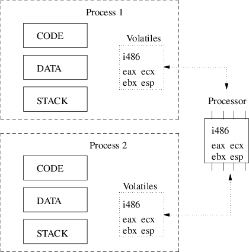
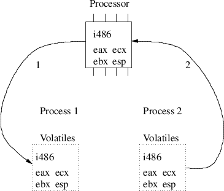

save program registers and disable interrupts k = get_interrupt_kind (); if (k == source 1) service_source1 (); else if (k == source 2) service_source2 (); else if (k == source 3) service_source3 (); else if (k == source 4) service_source4 (); else if (k == source 5) service_source5 (); etc restore program registers and enable interrupts return
IsrTemplate[ 0] := 0FCH ; (* cld (disable interrupts) *) IsrTemplate[ 1] := 050H ; (* push eax *) IsrTemplate[ 2] := 051H ; (* push ecx *) IsrTemplate[ 3] := 052H ; (* push edx *) IsrTemplate[ 4] := 01EH ; (* push ds *) IsrTemplate[ 5] := 006H ; (* push es *) IsrTemplate[ 6] := 00FH ; (* push fs *) IsrTemplate[ 7] := 0A0H ; IsrTemplate[ 8] := 0B8H ; (* movl 0x00000010, %eax *) IsrTemplate[ 9] := 010H ; IsrTemplate[10] := 000H ; IsrTemplate[11] := 000H ; IsrTemplate[12] := 000H ; IsrTemplate[13] := 08EH ; (* mov ax, ds *) IsrTemplate[14] := 0D8H ; IsrTemplate[15] := 08EH ; (* mov ax, es *) IsrTemplate[16] := 0C0H ; IsrTemplate[17] := 08EH ; (* mov ax, fs *) IsrTemplate[18] := 0E0H ;
IsrTemplate[19] := 068H ; (* push interruptnumber *) IsrTemplate[20] := 000H ; (* vector number to be overwritten. *) IsrTemplate[21] := 000H ; (* this is the single parameter. *) IsrTemplate[22] := 000H ; (* to function. *) IsrTemplate[23] := 000H ; IsrTemplate[24] := 0B8H ; (* movl function, %eax *) IsrTemplate[25] := 000H ; (* function address to be overwritten *) IsrTemplate[26] := 000H ; IsrTemplate[27] := 000H ; IsrTemplate[28] := 000H ;
IsrTemplate[29] := 0FFH ; (* call %eax *) IsrTemplate[30] := 0D0H ; IsrTemplate[31] := 058H ; (* pop %eax // remove parameter *) IsrTemplate[32] := 00FH ; (* pop %fs *) IsrTemplate[33] := 0A1H ; IsrTemplate[34] := 007H ; (* pop %es *) IsrTemplate[35] := 01FH ; (* pop %ds *) IsrTemplate[36] := 05AH ; (* pop %dx *) IsrTemplate[37] := 059H ; (* pop %cx *) IsrTemplate[38] := 058H ; (* pop %ax *) IsrTemplate[39] := 0CFH ; (* iret *)
void Process1 (void)
{
while (TRUE) {
WaitForACharacter();
PutCharacterIntoBuffer();
}
}
void Process2 (void)
{
while (TRUE) {
WaitForInterrupt();
ServiceDevice();
}
}


typedef void *PROCESS; extern void SYSTEM_TRANSFER (PROCESS *p1, PROCESS p2);

extern void SYSTEM_IOTRANSFER (PROCESS *first,
PROCESS *second,
unsigned int interruptNo);
extern void SYSTEM_NEWPROCESS (void (*p)(void), void *a,
unsigned long n,
PROCESS *new);
void SYSTEM_TRANSFER (PROCESS *p1, PROCESS p2)
{
onOrOff toOldState;
toOldState = turnInterrupts(Off);
asm volatile ("pusha ; pushf"); /* push all registers */
/* remember p1 is the address of a PROCESS */
asm volatile ("movl %[p1], %%eax ; movl %%esp, (%%eax)"
:: [p1] "rm" (p1)); /* p1 := top of stack */
asm volatile ("movl %[p2], %%eax ; movl %%eax, %%esp"
:: [p2] "rm" (p2)); /* top of stack := p2 */
asm volatile ("popf ; popa"); /* restore all registers */
toOldState := turnInterrupts(toOldState);
}
This document was produced using groff-1.22.